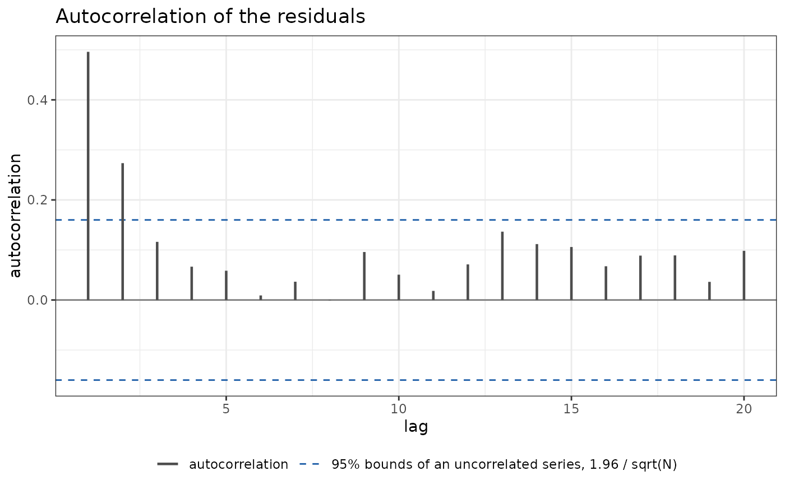
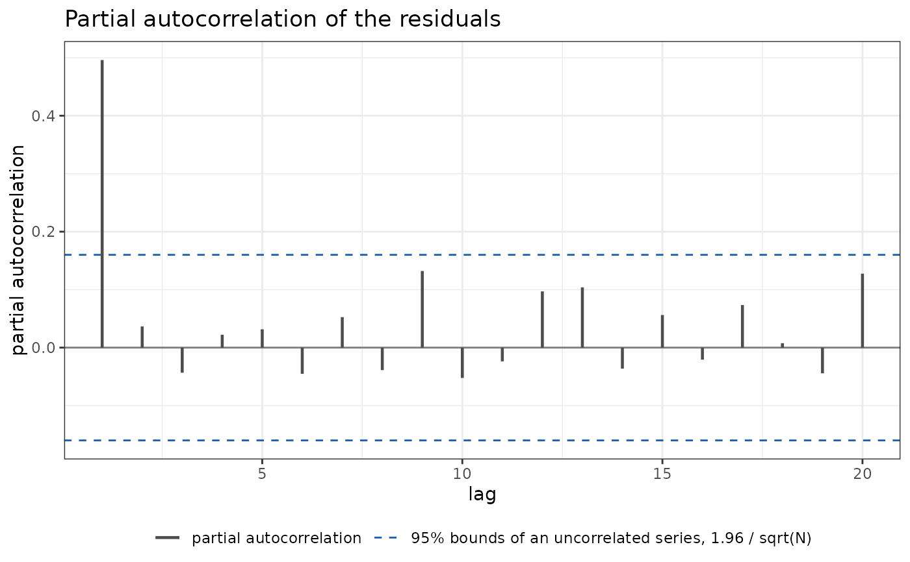
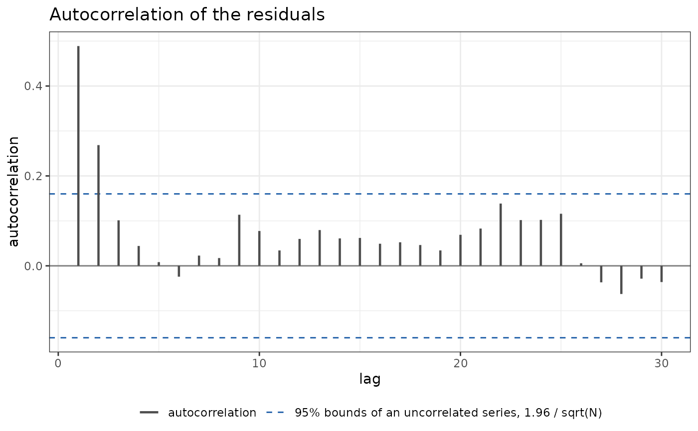

plot_acf() selects the graph of the sample autocorrelation of the
quantile residuals, or of their squares, and plot_pacf() the graph of
their partial autocorrelation, with the limits \(\pm 1.96/\sqrt{N}\).
The series are the observations of each group in time order, and the
autocorrelation is pooled over the groups.
Usage
plot_acf(
lag_max = 30,
squared = FALSE,
by = NULL,
time = NULL,
seed = NULL,
legend = TRUE
)
plot_pacf(
lag_max = 30,
squared = FALSE,
by = NULL,
time = NULL,
seed = NULL,
legend = TRUE
)Arguments
- lag_max
The largest lag.
- squared
Whether to use the squared residuals.
- by
NULL, or the name of the variable of the data that divides the observations into separate series.- time
NULL, or the name of the variable of the data that orders the observations within a series.- seed
A single number that seeds the randomization, or
NULL.- legend
Whether to draw the legend that names the elements of the graph.
Value
A PlotAcf object, inheriting from diagnostic_plot.
Details
With residuals \(e_{gt}\) for the group \(g\) at the position \(t\)
of its series, and \(\bar e\) their mean over all \(N\) observations,
the autocorrelation at lag \(k\) is
$$r_k = \frac{\sum_g \sum_t (e_{gt} - \bar e)(e_{g,t+k} - \bar e)}
{\sum_g \sum_t (e_{gt} - \bar e)^2},$$
where the numerator sums the pairs that lie in the same group at distance
\(k\) and the denominator sums every observation. Each pair counts once,
so a long series weighs more than a short one, and with one group
\(r_k\) is the autocorrelation of stats::acf(). The partial
autocorrelations are computed from \(r_1, \dots, r_K\) by the
Durbin-Levinson recursion. Under a correct model the quantile residuals are
independent standard normal variables, \(r_k\) has standard deviation
near \(1/\sqrt{N}\), and about five percent of the values fall outside
the limits. The autocorrelation of the squares (squared = TRUE) detects a
variance that depends on the past.
The groups and the order are taken from by and time when they are
given; otherwise from the modelterms7::gas() or modelterms7::regime()
term of the fit, if there is one; otherwise the observations form one
series in the row order of the data. For a discrete family the residuals
are randomized and seed makes them reproducible.
Examples
set.seed(1)
dd <- data.frame(t = 1:150)
dd$y <- as.numeric(arima.sim(list(ar = 0.5), n = 150))
fit <- statmod(y ~ 1, distributions7::gaussian1_distrib(), dd)
ggplot2::autoplot(fit, plot_type = plot_acf(lag_max = 20))

ggplot2::autoplot(fit, plot_type = plot_pacf(lag_max = 20))

# three series of 50 observations, stored one after the other
dd$id <- rep(1:3, each = 50)
ggplot2::autoplot(fit, plot_type = plot_acf(by = "id", time = "t"),
data = dd)
